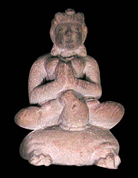

KurmaThe second incarnation of Vishnu was a tortoise. Kurma had a large curved shell. 
Vishnu was sent to earth as Kurma to help recover the 'water of life' called amrita. Amrita was lost in the first flood, and without it, the existence of the universe is in danger. Kurma allows the gods and demons to use his back to help steady a mountain which is being used to churn the ocean of milk and recreate the amrita. |